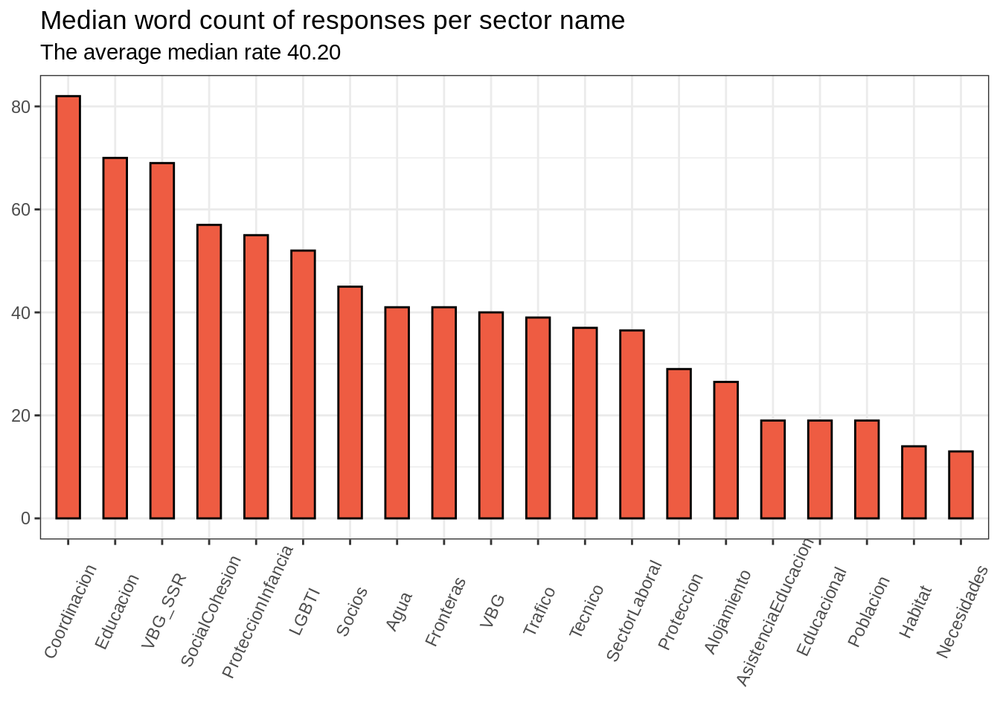
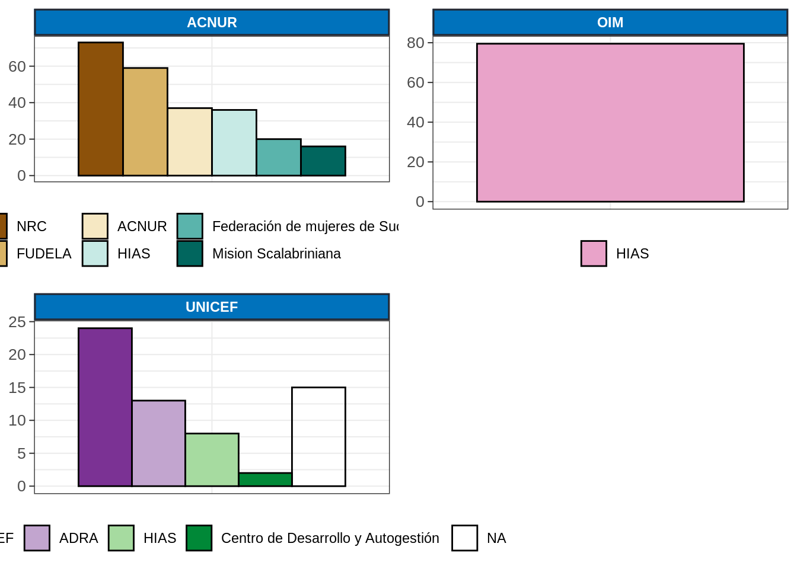
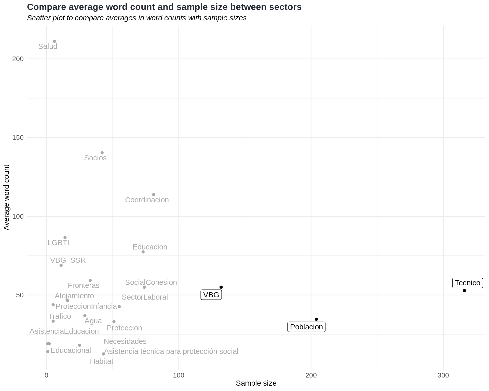
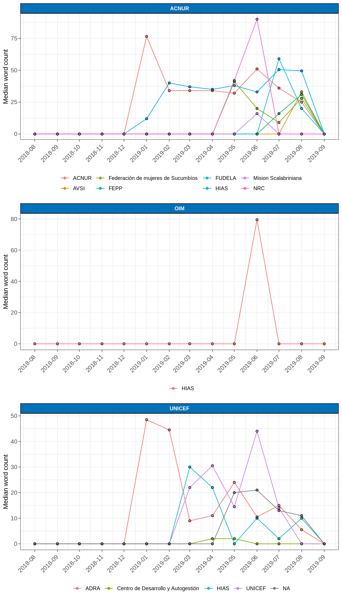
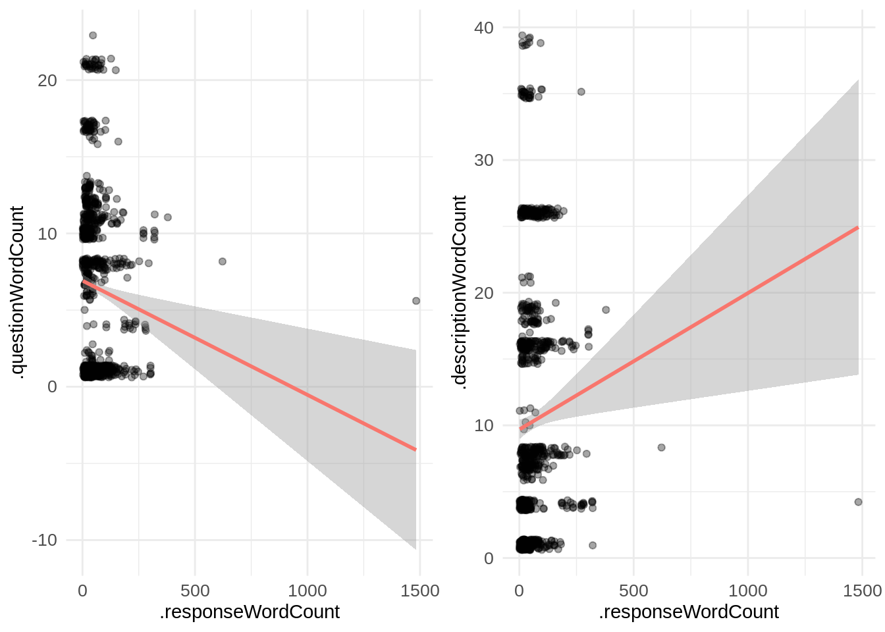

Word count
One issue with the nature of the questions is that they are only unique in a form. These questions can be distributed across multiple forms. The questions sharing the same name will have different meanings. For instance, the question “Cualitativo” from the form “Salud” should imply different thing than the question “Cualitativo” from the form “Protección_VBG”.
In order to solve this kind of problem:
We can combine question with the form and also its folder label. There we can achieve a unique name for each question.
Another thing to resolve this would be doing analysis to move the analysis up to form level. In this file, we did both, therefore the analysis shown as below:
Count of responses per topic/question (note that missing entries NAs are
removed):
| folderName | formName | formNameRecode | Month | recordId | question | response | description | partnerName | subPartnerName | province | canton | reportingUsers | .responseWordCount | .questionWordCount | .descriptionWordCount |
|---|---|---|---|---|---|---|---|---|---|---|---|---|---|---|---|
| Objectivo_1.1 | Salud | Salud | 2019-04 | jvnuvwqo2 | Cualitativo | Se complementa | Descripción de | UNFPA | UNFPA | SUCUMBIOS | LAGO AGRIO | spena@unfpa.org | 13 | 1 | 17 |
| Objectivo_1.1 | Salud | Salud | 2019-04 | jvnuye0p3 | Cualitativo | 233 Equipos méd | Descripción de | UNFPA | UNFPA | ESMERALDAS | SAN LORENZO | spena@unfpa.org | 46 | 1 | 17 |
| Objectivo_1.1 | Salud | Salud | 2019-02 | s0462106109-2019-02 | Cualitativo | 1. Entrega de k | Descripción de | UNFPA | UNFPA | EL ORO | HUAQUILLAS | spena@unfpa.org | 302 | 1 | 17 |
| Objectivo_1.1 | Salud | Salud | 2019-02 | s1159017445-2019-02 | Cualitativo | 1. Entrega de k | Descripción de | UNFPA | UNFPA | EL ORO | MACHALA | spena@unfpa.org | 302 | 1 | 17 |
| Objectivo_1.1 | Salud | Salud | 2019-02 | s1282460545-2019-02 | Cualitativo | 1. Entrega de k | Descripción de | UNFPA | UNFPA | SUCUMBIOS | LAGO AGRIO | spena@unfpa.org | 302 | 1 | 17 |
| Objectivo_1.1 | Salud | Salud | 2019-02 | s1780949540-2019-02 | Cualitativo | 1. Entrega de k | Descripción de | UNFPA | UNFPA | CARCHI | TULCAN | spena@unfpa.org | 302 | 1 | 17 |
It’s also a good practice to see the number of questions. For example, one question has two responses, therefore they’re short.
The standard deviation is a single number statistics to show the measure of spread in data.
| Deviation of response word counts per form topic | |
|---|---|
| Measure the spread with standard deviation | |
| formNameRecode | SD |
| Agua | 28.96 |
| Alojamiento | 65.81 |
| AsistenciaEducacion | NA |
| Coordinacion | 86.59 |
| Educacion | 55.07 |
| Educacional | 16.97 |
| Fronteras | 42.88 |
| Habitat | 8.47 |
| LGBTI | 102.74 |
| Necesidades | 16.10 |
| Poblacion | 60.07 |
| Proteccion | 22.74 |
| ProteccionInfancia | 16.35 |
| Salud | 141.10 |
| SectorLaboral | 23.51 |
| SocialCohesion | 31.17 |
| Socios | 241.91 |
| Tecnico | 48.78 |
| Trafico | 17.01 |
| VBG | 49.60 |
| VBG_SSR | 34.22 |
In the plot above, the box plot of form topics and response word counts based on the raw data, the outliers are shown in orange color. Outliers are the points placed outside the whiskers, which is the long line, of the boxplot.
Distribution of word counts

There’s a lot of variation in response word count. We need to know what are those responses with a word count of 1. Or better to eliminate the responses which has less than 5 words (an arbitrary number to filter).
Median word count of responses per form name
A caveat: Reducing multiple values down to a single value should be avoided in the early stages of the analysis because reducing hides a lot e.g. a bar chart showing average the word count per partner. Some partners may write longer than others, because:
They actually write longer than other partners.
The questions they answered require short answers.

Here above we remove Salud form because it has only
6
records and skews the data.
Median word count of responses per partner
Median word count of responses per specific reporting partners

Median word count of responses per partner over months

Median word count of responses per specific reporting partners over months

The Description field
Some questions have the description field giving extra details about the questions.
Do some questions with the extra description field have better response quality than the questions which do not have it?
Looking at the table containing form name, question, description and so on:
We see in the plot below that the response word counts per form and colored if a response has a description field or not. Having a description field or not is calculated as that a description field has a minimum one word.

The responses with the longest word counts are the ones with description. Nevertheless, it is not so easy to see a clear trend that there’s a correlation between response word count and description fields. Interestingly, the form topic Protección_VBG has no description fields at all in its form topics.
Analysis of Variance
TODO ANOVA
Correlation
The correlation between the word count of different fields in the ActivityInfo:
| .responseWordCount | .questionWordCount | .descriptionWordCount | |
|---|---|---|---|
| .responseWordCount | 1.00 | -0.10 | 0.08 |
| .questionWordCount | -0.10 | 1.00 | -0.57 |
| .descriptionWordCount | 0.08 | -0.57 | 1.00 |
- 1.63%
of the words in the response field have only
1words. And those words were just not important (as they are ).

TODO
The regression lines
We can look at multiple continuous variables in our data.
word count of response field:
response.wcword count of question field:
question.wcword count of description field:
description.wc
Given this data, the model formula showing dependent and independent variables can be as follows:
$ response.wc question.wc $
$ response.wc question.wc + description.wc $
In that sense the word count of response field is the dependent variable and word count of question and word count of description fields are the independent variables in the regression.
Thus, we expect to have more word count in question and description fields to have a positive effect on the word count of response field.
Scatter plots help understand the characteristics of those variables. However, we miss a general understanding that is the trend line.

The gray area around the lines shows the confidence band at the 0.95 level. Although there’s a straight slope in the linear regression line, we cannot say that the trend line is robust because the confidence band representing the uncertainty in the estimate is wide.
Logistic regression
TODO
In fact, it is called the binomial logistic regression.
When one of the independent variables is dichotomous (having two categories), ...
Hypothesis testing
We do the hypothesis testing based on the assumptions we have.
$ H_0 $ : More word count in questions results in more word count in responses.
TODO